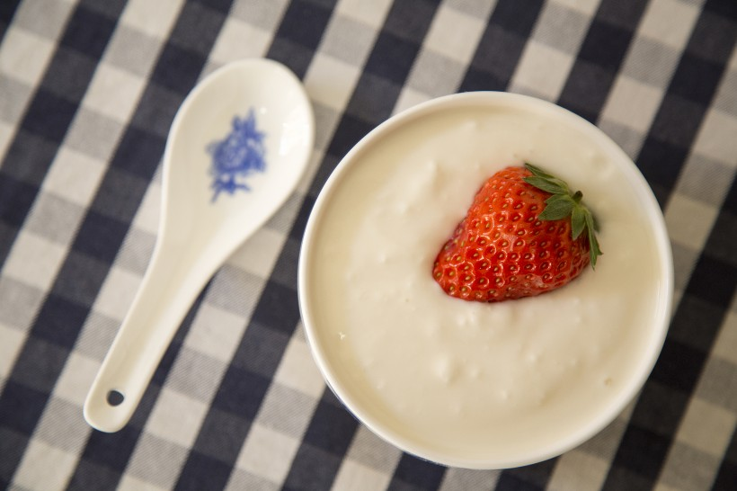

详情
详情
详情
详情
酸奶:怎么挑？怎么喝？什么时候喝？
口袋医生 2018-4-27 304酸奶是很多MM的最爱，不仅有助清肠排毒还可以美容养颜。但是酸奶虽好喝，饮用过程也有很多技巧。 喝酸奶健康常识：酸奶什么时候喝最好？喝多少？下面，告诉你关于喝酸奶的各种小常识，让你喝得健康又放心。
1、什么时候喝酸奶比较好
时间不限。胃酸过多的避免饭前喝； 空腹喝酸奶促进排便，便秘者适合，腹泻者则不适合；其他人饭前饭后都可以喝。 但不要在吃完很丰盛的晚餐后再来一大瓶酸奶，因为这样额外增加了能量的摄入。 若要晚饭后喝酸奶，就要相应减少晚餐，否则会引发肥胖。